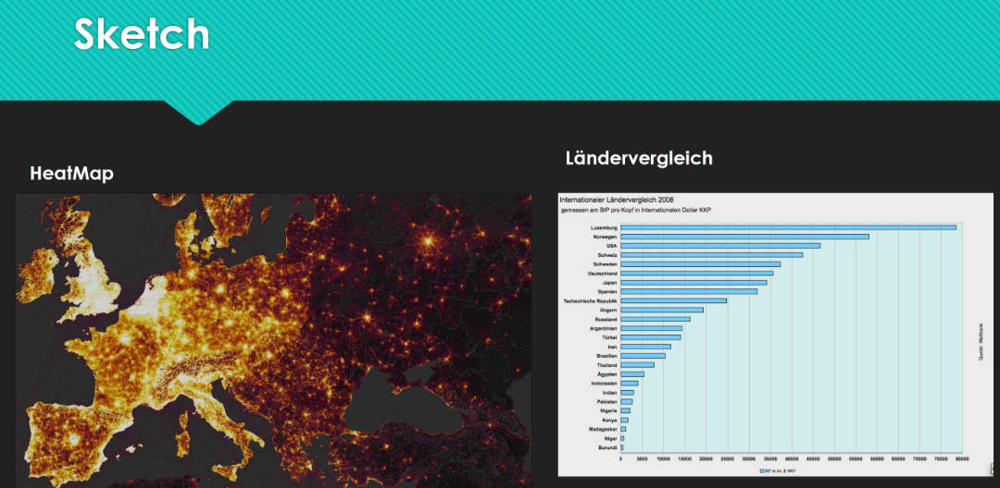

Als Autofahrer fragt man sich manchmal, wo man einen Blitzer erwarten kann und wo nicht.
Die Polizei jedes Landes (in der Schweiz sogar pro Kanton) kann selber entscheiden, wo sie
wie viele Blitzer aufstellen. Nun wäre es interessant zu wissen, welche Länder wie viele
Blitzer aufstellen. Als weiterführende Auswertung wäre es dann auch spannend zu sehen, ob
die Anzahl Unfälle korreliert mit der Anzahl Blitzer. Diese Auswertung beschränkt sich aber
nur auf die Blitzer selber. Zudem sind die Daten aggregiert, da es nicht in allen Ländern
rechtlich erlaubt ist, die Standorte der Blitzer zu publizieren.
Wir haben uns folgende Visualisierungen überlegt, welche ideal wären um den Sachverhalt
möglichst einfach und übersichtlich darzustellen:

Dabei haben wir uns orientiert am Beispielkatalog von D3.js, welcher viele mögliche
Visualisierungen darstellt und so Inspiration bietet.
Datenquelle
Die Blitzerdaten kommen von der Webseite SCDB.info, welche von vielen Ländern die gemeldeten
Blitzer sammelt. Die Datenbank enthält über 100'000 Blitzer (mobil und stationär) in 92 Ländern.
Um Zugriff auf die Daten zu erhalten, muss man ein Abo abschliessen, mit dem man immer die
aktualisierten Daten bekommt. Zum Download stehen POI (Point of Interest) Files für diverse
Navigationsgerätehersteller zur Verfügung. Nachdem mehrere Formate durchprobiert wurden von uns,
haben wir uns für das Format von Garmin entschieden, da dies ein CSV ist, welches wir einfach
für unsere Zwecke benutzen konnten.
Eine Zeile im Datensatz sieht dabei so aus:
7.25483,51.62969,"aus Richtung Recklinghausen","[51207]"
Die ersten 2 Felder sind dabei die Koordinaten des Blitzers, danach kommt ein Feld mit einer
Bemerkung und am Schluss eine ID. Da wir daran interessiert sind, in welchem Land der
Blitzer steht, mussten wir diese Information noch zum Datensatz ergänzen. Dafür haben wir
ein Python Script geschrieben, welche die Koordinate bei mapquest.com über ein API
abfragt. Damit erhält man für eine GPS Koordinate diverse Informationen, unter anderem in
welchem Land diese Koordinate ist. Das Abfragen dauerte recht lange, da das API gedrosselt
ist, wenn man kein Premium User ist.
Der pure Vergleich der Anzahl Blitzer fanden wir im Laufe des Projektes nicht wirklich aussagekräftig,
da ja grössere Länder automatisch mehr Blitzer haben. Daher haben wir aus dem "The World Factbook"
der CIA pro Land noch die Anzahl Strassenkilometer pro Land zu unserem Datensatz dazugeladen. Die Daten
sind dabei als CSV mit dem Ländernamen und dem Wert angespeichert. Da natürlich der Ländernamen nicht immer
genau übereinstimmte mit unseren bisherigen Daten, haben wir ein Python Script gemacht, welches versucht, den
Key aufgrund des Namens zu finden. Für die Länder, welche dies nicht funktioniert hat (32 Stück), haben wir
das Mapping von Hand gemacht (Beispiel "Korea, Republic of" war im CIA Datensatz als "Republic of Korea" gespeichert).
Schlussendlich haben wir noch ein weiteres Python Script erstellt, welches die Daten aggregiert
pro Land. Dies ist nötig, damit wir diese Daten dann visualisieren können. Schlussendlich gibt
es ein JSON, welches die Daten in folgender Struktur enthält:
Für die Visualisierung der Karte haben wir uns entschieden, die Anzahl der Blitzer pro
Land mit einer Farbskala darzustellen. Damit sieht man auf einen Blick, wie viele Blitzer
ein Land im Vergleich zu anderen Ländern hat. Für das Mapping der Werte zu den Farben
haben wir uns für eine Quantil Normalisierung entschieden, da so die Unterschiede der Länder
am besten farblich sichtbar werden. Zudem kann man auf ein Land klicken und so den Namen des
Landes und die Anzahl Blitzer erhalten. Damit wurde das Details-OnDemand Prinzip umgesetzt,
sodass der User nicht gleich überfordert ist, wenn auf der ganzen Map überall Zahlen angezeigt
werden.
Der User kann selber auf der Weltkarte navigieren,
das Prinzip ist dabei ähnlich wie auf Google Maps: Per Scrollen kann man herein- und herauszoomen,
mit Klicken und Halten kann man die Karte umherziehen. Da auf der Karte nur die Länder
eingezeichnet sind (nicht mehr Details, auch wenn man näher zoomt), haben wir uns entschieden
keine Suchfunktion oder ähnliches zu implementieren, da die meisten User relativ leicht auf einer
Weltkarte ihr Land finden können.
Als weiteres Diagram haben wir zusätzlich ein vertikales Balkendiagram gewählt. Die Daten
wurden dabei so sortiert, dass das Land mit der höchsten Anzahl Blitzer zuoberst ist. Dies
ermöglicht ein Ranking der einzelnen Länder im vergleich zueinander, was auf einer Weltkarte
nicht ganz so einfach ist. Dabei wurde darauf geachtet, dass die Data-Link Ratio hoch ist
und das Diagram möglichst minimalistisch. So kann sich der User auf die Daten konzentrieren.
Die Werte für die Balken wurden linear zueinander skaliert und der effektive Wert steht jeweils
rechts neben dem Balken. Somit ist ein einfacher visueller Vergleich möglich, man kann aber auch
die konkrete Zahl sehen wenn dies interessiert. Da vor allem im oberen Bereich die Balken
relativ lang werden können, wurde ein Hover Effekt implementiert, welcher dem User eine visuelle
Hilfe geben soll, welcher Balken er gerade anschaut. Damit lässt sich der Wert (ganz rechts)
einfacher dem zugehörigen Land (ganz links) zuordnen.
Die Namen der einzelnen Länder sind immer auf Englisch. Eine Alternative wäre gewesen, den
Name des Landes in der jeweiligen Landessprache darzustellen. Wir haben uns aber dagegen
entschieden, da es sonst sehr schwer wird, herauszufinden welches Land gemeint ist, ohne
die Landessprache zu kennen. Zudem gibt es in gewissen Ländern mehrere Landessprachen, was
ein weiteres Argument für eine einheitliche Darstellung in Englisch ist.
Weiter kann man beim Balkendiagram umschalten auf den Vergleich Blitzer pro 1000 Strassenkilometer.
Per Javascript werden dann die Werte berechnet aus der Anzahl und den gespeicherten Strassenkilometer.
Die Sortierung wird auch gleich angepasst, damit man auch hier ein sinvoller Vergleich machen kann.
Erkentnisse
Es gibt zwischen den einzelnen Ländern massive unterschiede in der Anzahl der Blitzer.
Was wir schwer beurteilen können ist, ob es in diesen Ländern wirklich viel weniger Blitzer
gibt oder ob einfach unsere Datenquelle für gewisse Länder weniger Daten sammelt. Um dies
zu überprüfen, müsste man mehr Zeit investieren und auch auf offizielle Quellen zurückgreifen.
Man könnte z.B. bei den einzelnen Ländern die lokale Polizei anfragen, ob sie die Anzahl
Blitzer herausgeben können.